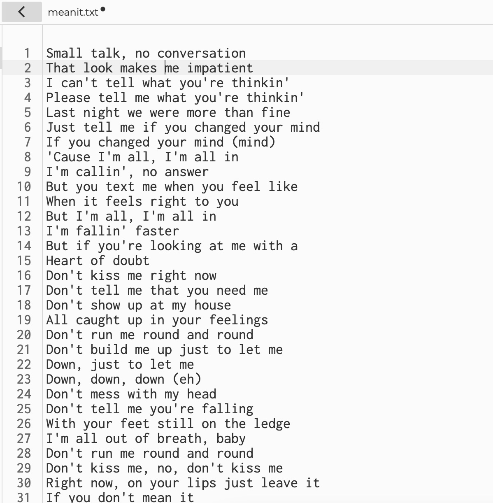
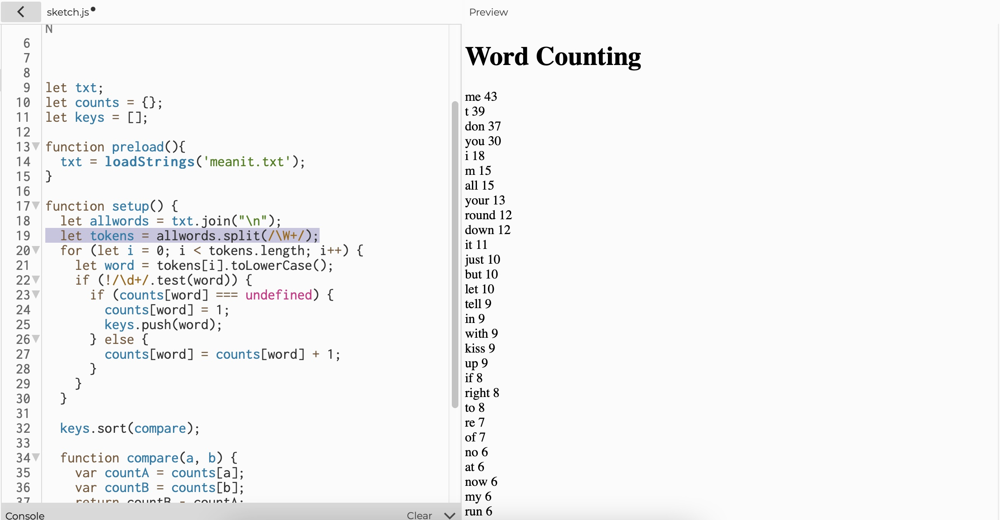
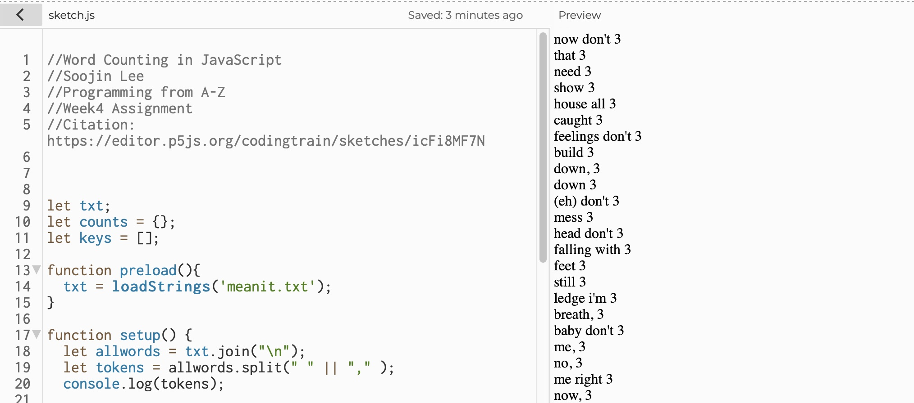
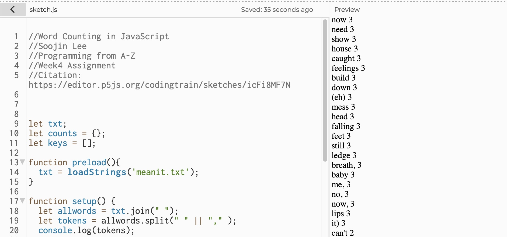
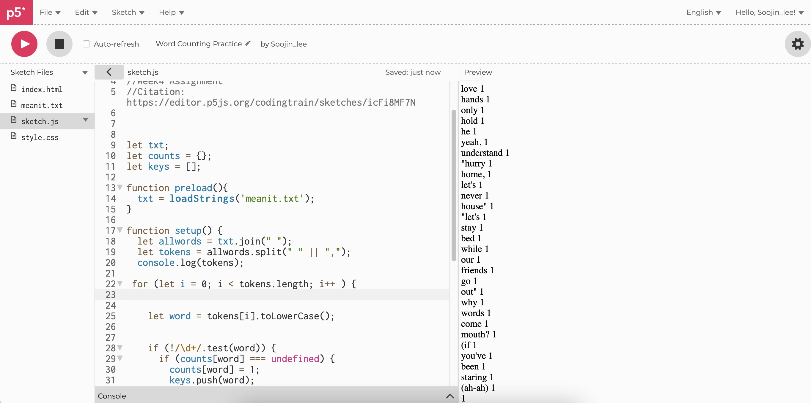
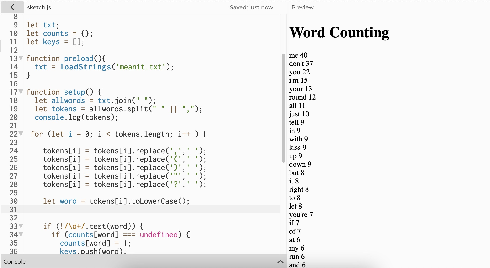
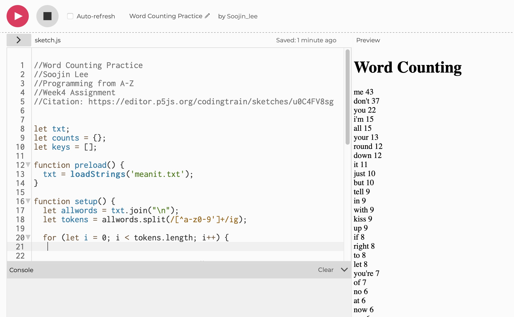

Author: Soojin Lee Date: 3, Oct, 2021
| Practice Counting Words
For this week, I watched many video tutorials like
"Word Counter in JavaScript" ,
"TF-IDF" ,
"Associative Arrays in JavaScript" , and followed along the tutorials with some creative adaptation. For the first exercise, following "Word Counter in JavaScript" tutorial, I counted the words for the lyrics of one of my favorite song "Mean it" by Lauv . Working on this exercise, I have learnt the core algorithms of word counting.
View the project
Here
Mean It Lyrics

txt.join & allwords.split

I began with loading the txt file. I have learnt that when txt files are loaded using "loadStrings" function, everything is loaded as an array, where each element of the array is one line from the text file.
Therefore, I created a variable that joins all the array together into one long string, which then I splited them into words.
- txt.join("\n"); Join all the array of text line
- allwords.split (/\W+/); make a split when for everything that is not a word character
Apostrophe Issue
One issue for using allwords.split (/\W+/); was that it splits apostrophe to two words. For example, it counted don't as two words: (don) and (t). Hence, "t" placed as the second highest word count.
To fix this, instead of making it to split for every non word character, I made it to split for every allwords.split(" " || ","); space or a comma.

This fixed the issue of apostrophe split issue, where it is no longer splitting the word with apostrophe, but for some reason, words like "round don't" or "me down" were recognized as one word. The pattern for these words that are not splitting were words that are joined from one line to another. Therefore, I explored the join new line function to fix this issue.
Join New Line / Join Space
Instead of joining every new line using text.join("\n") function, I joined the array of lines, by joining space, using text.join(" ") this function.

Deleting Punctuation

Since I let it to split at comma and a space, the list of words included rest of the punctuations like quoatation mark, or a bracket. Therefore, I wrote another function that deletes punctuation (as shown below).
For example,
I used tokens[i] = tokens[i].replace('(',' '); replace function to get rid of bracket in the word.

Elaborating on Split Function

Following Profess Daniel Shiffman's suggestion, I fixed the apostrophe issue by writing a code this way:
let tokens = allwords.split(/[^a-z0-9']+/ig);
This function allows tokens to split at anything that is not (a-z, 0-9, or apostrophe) and this is case insensitive.
Using this code, I was able to make make the code a lot more efficient. I could get rid of all the tokens replace functions.
Other Learnings and Findings
Here are some of the other things that I have learnt working on this small exercise:
- !/\d+/.test(word) To test if it is not simply a string of digit(s).
- toLowerCase(); To convert all the tokens to lowercase.
- counts[words]; count() function is used to count the number of collections in the element; in this case, it is counting how many (word) is in the array.
- let keys = [];
keys.push(word); store all the words found to the array
- for (let i = 0; i < keys.length; i++) {
let key = keys[i];
createDiv(key + " " + counts[key]); display words and the word counts
- keys.sort(); sort words in alphabetical order
- keys.sort(compare);
function compare(a, b) {
var countA = counts[a];
var countB = counts[b];
return countB - countA;
} sort words in the order of highest counts to the lowest counts.
| Practicing TF-IDF
Next, I followed the
TF-IDF video tutorial on implementing Term Frequency - inverse Document Frequency, a algorithm that scores each word's relevance for a given document based on its frequency in one document relative to all other in a corpus.
For the text file, I used the lyrics of three songs; "Mean It", "Canada", and "Fake" by Lauv.
View the project
Here